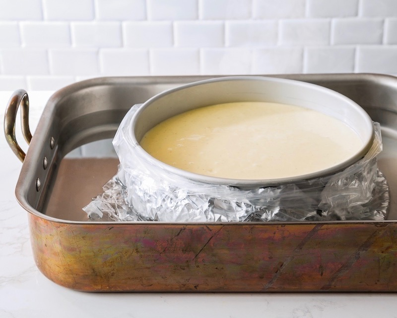
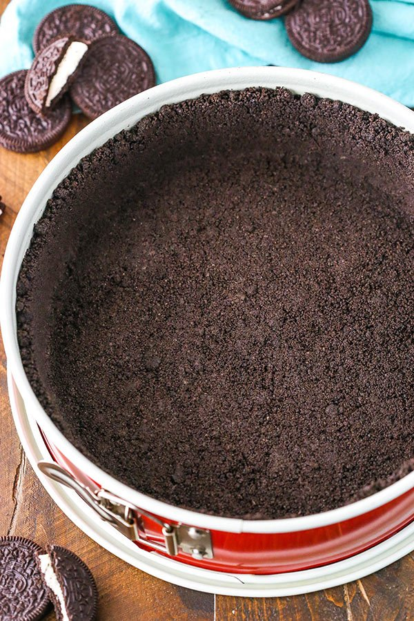

- 1. Preheat oven to 325°F, and grease a 9-inch springform pan. Carefully wrap the outside of the pan in 2 layers of heavy-duty aluminum foil, being sure that there are NO gaps where water could seep through.
- 
- 2. Add Oreo cookies to the bowl of a food processor, and process until completely crumbled. (Or you can do this step by hand by crushing Oreos with a meat mallet inside a ziplock freezer bag.) Add in the melted butter, and stir or process until evenly mixed with the Oreos. Press the Oreo mixture evenly into the bottom of the springform pan. Then place the pan in a large roasting dish (or any pan larger than the springform), and bring a tea kettle or pot of water to boil in preparation for the water bath. Set aside. (*If you don’t want to place the pan directly in a water bath, you can skip this last step and just place a pan of water on the shelf beneath the cheesecake pan.)
- 
- 3. Using an electric mixer, beat cream cheese on medium speed for 3 minutes until smooth. Add sugar and beat for an additional minute until well blended. Add Greek yogurt and vanilla, and beat for an additional minute, stopping partway to scrape the bottom of the bowl with a spatula. Add eggs, one at a time, beating on low speed after each addition just until blended. Do not overbeat! Pour into crust.

- 4. Place the double pans in the oven on a shelf on the bottom third of the oven. Very carefully use a tea kettle
(or large measuring cup) to pour the boiling water in the larger pan to form a water bath around the springform, so that it comes up about 1-inch around the springform.

- 5. Using an electric mixer, beat cream cheese on medium speed for 3 minutes until smooth. Add sugar and beat for an additional minute until well blended. Add Greek yogurt and vanilla, and beat for an additional minute, stopping partway to scrape the bottom of the bowl with a spatula. Add eggs, one at a time, beating on low speed after each addition just until blended. Do not overbeat! Pour into crust.